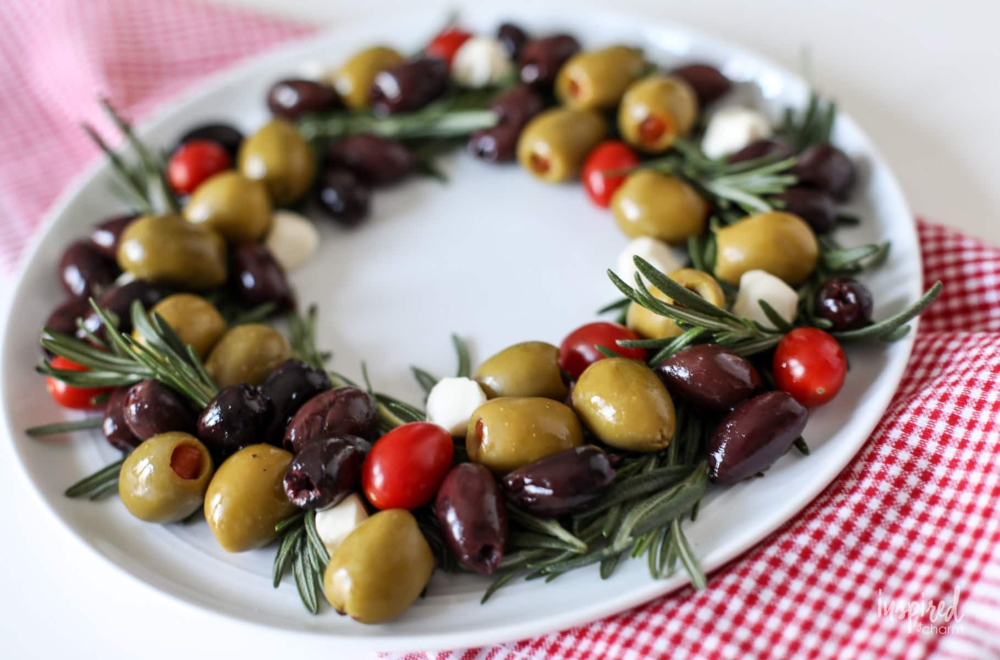

Festive Olive and Cheese Appetizer

Description:
This easy-to-assemble cherry tomato, olive, and cheese appetizer platter is arranged
with fragrant rosemary sprigs to resemble a holiday wreath. Your guests will love nibbling
on this beautiful display. Serve with toothpicks.
Ingredients
- 24 sprigs fresh rosemary
- 12 ounces marinated mozzarella balls, drained
- ½ cup pitted Castelvetrano olives, rinsed and dried
- ¼ cup pitted Kalamata olives, rinsed and drained
- ¼ cup sugar plum tomatoes
Steps
- Arrange rosemary sprigs in a 10-inch-diameter circle to resemble a wreath.
Start by placing one sprig at a 45-degree angle with the leafy tip facing outwards.
Continue adding sprigs in the same direction until you have formed a full circle.
- Arrange clusters of mozzarella balls, olives, and tomatoes over rosemary sprigs.
Back to Home